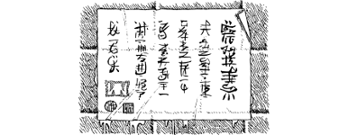

118
The sun has nearly set by the time you reach Yua Tzhan. Even at this late hour, the roads that approach the city’s four gates are busy with the traffic of travelling merchants. Some have come from the gold-rush town of Bajo in the foothills of the Hyunsei Mountains, but most are arriving from Hotloi and Liyulin, their wagons laden with exotic wares.
As you approach the north gate you consult your Siyenese Compass, and its steady needle confirms that the Claw of Naar is here, somewhere, in this grand walled city. You and your companions pass through the arched gateway without challenge, and follow a broad lantern-lit avenue towards the city’s main square. Many open-fronted shops line this thoroughfare, their display tables laden with goods to entice its citizens to part with their hard-earned Ren.
Upon entering the main square, you notice that small crowds have gathered on each corner. They are reading proclamations which have been pasted upon the walls by the city’s officials. Using your Magnakai Discipline of Pathsmanship, you are able to translate the Bhanarian script for the benefit of your companions. The posters declare that tomorrow shall be a holiday. This is to celebrate a visit to the city by Autarch Sejanoz himself. He will arrive at noon tomorrow, and every citizen is expected to be present to honour their ruler when his entourage passes through the streets.
{kind=link}

Your Kai senses tell you that the Autarch is visiting the city for one simple reason: he is coming here to collect the Claw of Naar. The news of his imminent arrival re-ignites your resolve to find the artefact, and swiftly.
As you and your companions are riding across the main square, you scan the surrounding buildings in search of an inn where you may stable your horses for the night. The houses and hovels of Yua Tzhan are densely-packed, and your search for the Claw will best be conducted on foot. There are several inns bordering the square, but only two have stables: The Prairie Princess and the Golden Trough.
If you wish to visit the Prairie Princess, turn to 273.
If you choose to visit the Golden Trough, turn to 149.